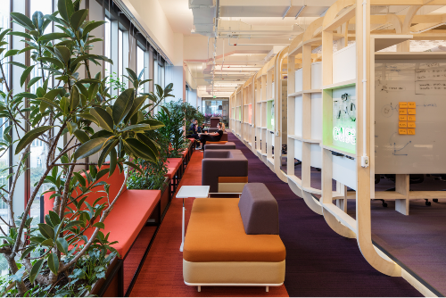
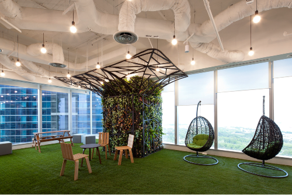

A composição espacial desempenha um papel fundamental na criação de ambientes corporativos que transcendem a simples funcionalidade, transformando-se em espaços que contam histórias, comunicam valores e estimulam a produtividade. A disposição estratégica de elementos, o equilíbrio entre áreas abertas e privadas, o uso inteligente de cores e texturas e a integração de mobiliário são apenas algumas das ferramentas à disposição para moldar a experiência dos colaboradores e clientes dentro desses ambientes.
Nesse contexto, compreender a arte da composição espacial é crucial para conceber escritórios que não apenas atendam às necessidades práticas, mas também inspirem, promovam a interação e reflitam a identidade e os valores da empresa.
No design de interiores corporativo, a aplicação de determinado estilo é uma maneira estratégica de refletir a identidade e a visão da empresa para funcionários e clientes.
Veja alguns exemplos:
O estilo minimalista concentra-se na simplicidade, nas linhas limpas e nos espaços desobstruídos. No design corporativo, o minimalismo pode transmitir uma sensação de organização e eficiência, ideal para espaços de trabalho focados e modernos. Na recepção, podem ser utilizados móveis simples e funcionais, com poucos adornos, para transmitir uma sensação de organização. Nas estações de trabalho, procura-se funcionalidade e organização, com mesas simples e espaço otimizado para aumentar a produtividade. Nas salas de reunião e nos espaços colaborativos, busca-se simplicidade com mobiliário funcional e neutro para promover a concentração e a interação.
Recepção em estilo minimalista
Fonte: Machado apud ArchDaily (2020)
A imagem mostra um ambiente de recepção corporativa composto de cores neutras, linhas simplificadas e leiaute simétrico.
Caracterizado por elementos atemporais e materiais nobres, o estilo clássico é ideal para empresas que desejam transmitir uma imagem de estabilidade e confiabilidade. Em espaços de recepção, o mobiliário elegante e os materiais luxuosos criam uma atmosfera acolhedora e sofisticada. Nos espaços de estações de trabalho, móveis robustos e clássicos proporcionam uma atmosfera formal e de integridade. Em espaços colaborativos e salas de reunião, mesas e cadeiras elegantes podem criar um ambiente de negócios sério e tradicional.
Sala de escritório em estilo clássico
Fonte: Neto apud Togni (c2024)
A imagem mostra uma sala de escritório em estilo clássico, com cores predominantes em marrom-escuro e caramelo e móveis robustos.
Fundindo elementos modernos e inovadores, o estilo contemporâneo é dinâmico e versátil. É excelente para empresas que buscam um ambiente atualizado e estimulante. Nas recepções, peças de design moderno e cores vibrantes podem ser utilizadas para um ambiente dinâmico e acolhedor. Integrar mobiliário modular e espaços abertos para fomentar a colaboração e a criatividade entre os funcionários é uma estratégia para a área de estações de trabalho. Tecnologia e mobiliário versátil incentivam a inovação e o pensamento criativo em espaços colaborativos e de salas de reunião.
Ambiente corporativo em estilo contemporâ
Fonte: Granatieri apud Helm (2012)
A imagem mostra ambientes de estações de trabalho, salas de reunião e espaços de descontração corporativos compostos de cores vibrantes, linhas e formas dinâmicas, assim como materiais modernos, como vidro e metal, em harmonia com materiais como pedra e madeira.
Com sua estética urbana e o uso de materiais brutos como metal e concreto, o estilo industrial é ideal para empresas que desejam transmitir uma sensação de autenticidade e originalidade. Em ambientes de recepção e de estações de trabalho, explorar o uso de materiais como metal, concreto e madeira rústica cria uma atmosfera urbana e despojada. A iluminação e os elementos de design arrojados criam um espaço inspirador e informal para salas de reunião e outros espaços colaborativos.
Ambiente de trabalho em estilo industrial
Fonte: Hasan apud Abdel (2022)
A imagem mostra um ambiente com estação de trabalho coletiva composto de materiais como tijolos e concreto aparente, madeira, metal e instalações aparentes.
Ao aplicar os estilos de design de interiores corporativo, é crucial considerar a identidade da empresa, suas metas e a atmosfera desejada para criar um ambiente que dê suporte às atividades diárias e promova o bem-estar dos funcionários. A combinação certa de estilos pode transformar um espaço corporativo em um local que motive, inspire e reflita a essência da empresa.
Ao aplicar cuidadosamente elementos como espaço, forma e contorno, linha, textura e padronagens, cor e sensações, é possível transformar o ambiente de trabalho em um espaço estimulante. Veja detalhadamente cada um desses elementos.
A disposição do espaço é crucial para criar uma atmosfera funcional e agradável. Dividir o ambiente em áreas de trabalho, reunião e relaxamento de forma estratégica maximiza a utilidade do espaço, ao mesmo tempo que mantém a harmonia visual e a fluidez. É importante fazer o levantamento de quais setores são relacionados ou interdependentes entre si, assim como aqueles que ficarão afastados. Dessa forma, fica mais fácil verificar as necessidades de cada um, sejam elas técnicas, sejam físicas ou psicológicas.
Lembre-se de que a circulação também compõe o espaço, podendo ser natural, quando não há nenhum elemento que a bloqueie, quando as pessoas caminham livres e relaxadamente; ou forçada, quando se induz as pessoas pelo caminho que se quer.
Na figura, o espaço de estações de trabalho está próximo às janelas, obtendo iluminação natural, e separado do espaço colaborativo por meio de uma circulação.
Ambiente corporativo
Fonte: Felco apud Moreira (2021c)
A imagem mostra um ambiente com estações de trabalho próximo de amplas janelas que permitem iluminação natural e estão separadas de uma mesa de trabalho coletiva por meio da circulação.
A escolha de móveis e elementos arquitetônicos com formas distintas pode criar uma sensação de dinamismo ou estabilidade. A integração de linhas curvas pode suavizar o ambiente, enquanto formas geométricas nítidas transmitem precisão e ordem, por exemplo. Já as diagonais geram dinamismo.
Espaço de descompressão corporativo
Fonte: Acayaba apud ArchDaily (2016a)
A imagem mostra um ambiente de descompressão com móveis para sentar-se com linhas diagonais na sua forma.
A utilização de linhas verticais pode criar a ilusão de pé-direito mais alto, além de sugerir formalidade e estabilidade, enquanto linhas horizontais proporcionam uma sensação de repouso e tranquilidade, além de poder ser utilizada para alongar e rebaixar ambientes. Já o uso estratégico de linhas diagonais pode gerar dinamismo e movimento no ambiente.
Recepção corporativa com linhas verticais
Fonte: Cossio apud Ott (2020)
A imagem mostra um ambiente de recepção com balcão à frente e lateralmente e ao fundo com fechamento composto de ripado de mateira na vertical.
A aplicação de texturas em superfícies e o uso de padronagens em tecidos ou revestimentos de parede adicionam profundidade e interesse visual ao espaço. A combinação de texturas suaves e ásperas cria um equilíbrio tátil e estético, como na figura, na qual a textura de madeira contrasta com as superfícies brancas e lisas.
Ambiente de trabalho corporativo
Fonte: Mikami apud Moreira (2020)
A imagem mostra um ambiente corporativo no qual contrastam a texturas de madeira de alguns móveis e divisórias e as paredes e móveis brancos lisos.
A aplicação cuidadosa dos elementos de design visa criar sensações específicas. Um ambiente com linhas suaves e tons suaves pode induzir a sensação de calma, enquanto formas nítidas e cores vivas podem gerar uma atmosfera mais dinâmica e enérgica:
Ambiente coletivo corporativo
Fonte: Sanidad apud Dejtiar (2019d)
A imagem mostra um espaço coletivo corporativo que mescla a cor neutra da madeira com adesivos na cor magenta no piso e mesa e refrigerador em amarelo-limão.
A aplicação estratégica dos elementos de design de interiores em ambientes corporativos não só transforma esteticamente o espaço, mas também influencia diretamente o bem-estar e o desempenho dos colaboradores. Ao compreender e aplicar de maneira consciente esses elementos, é possível criar ambientes que não apenas cativam visualmente, mas também inspiram sensações positivas e promovem a excelência dentro do contexto corporativo.
Os princípios de design de interiores são diretrizes fundamentais que orientam a criação de espaços harmoniosos e funcionais. Ao aplicar conscientemente princípios como harmonia, ordem, regularidade, equilíbrio, peso, direção, simetria, ritmo, ponto focal, escala e proporção, unidade, contraste e variedade, é possível conceber ambientes corporativos que não apenas impressionem visualmente, mas também promovam a eficiência, o conforto e a produtividade dos colaboradores.
Veja definições e exemplos de cada um desses princípios:
A busca por elementos que se complementam e criam um todo coeso é essencial. Na configuração do espaço corporativo, a harmonia pode ser alcançada por meio da escolha de cores que se complementam, da utilização de formas e texturas consistentes e da seleção cuidadosa do mobiliário para criar um ambiente coeso e equilibrado.
Na figura, é possível citar o modelo-padrão de mesas e as divisórias azuis como alguns dos elementos para criar coesão no ambiente.
Ambiente de estações trabalho
Fonte: Macarios apud ArchDaily (2016b)
A imagem mostra um ambiente com estações de trabalho com mesas padronizadas e divisórias azuis entre elas.
A organização e a disposição lógica dos elementos no espaço corporativo proporcionam ordem e facilitam a funcionalidade. Manter uma regularidade na distribuição dos móveis e elementos decorativos contribui para um ambiente equilibrado visualmente, enquanto o equilíbrio simétrico ou assimétrico pode criar uma sensação de estabilidade ou dinamismo, respectivamente.
Note, na figura, que existe uma ordem na disposição das cabines individuais de trabalho e na disposição dos sofás.
Espaço de descompressão corporativo e salas individuais
Fonte: Navarro apud Moreira (2022b)
A imagem mostra uma sequência de cabines de trabalho individuais brancas uma ao lado da outra. Em frente a cada cabine existe um par de sofás verdes.
O peso visual dos elementos no espaço pode ser ajustado para criar um foco específico ou direcionar o olhar para áreas estratégicas. A direção pode ser explorada por meio da disposição de móveis ou elementos lineares para guiar o movimento visual no ambiente corporativo, como na figura, em que os adesivos no piso indicam a direção da porta.
Elementos direcionais no espaço corporativo
Fonte: Estevez apud Dejtiar (2019b)
A imagem mostra um ambiente com adesivos indicativos da direção da porta no piso.
A aplicação de simetria cria uma sensação de ordem e formalidade. Em um ambiente corporativo, a simetria pode ser utilizada na disposição de móveis, na escolha de elementos decorativos e na disposição das formas para transmitir uma imagem de estabilidade e organização.
Sala de reuniões
Fonte: Hauz Engenharia (s. d.)
A imagem mostra uma sala de reuniões simétrica, o que significa que o lado direito da sala apresenta os mesmos elementos do lado esquerdo a partir de um eixo central, como paredes pretas dos dois lados e mesa centralizada.
A repetição ordenada de elementos visuais cria um ritmo que pode gerar uma sensação de movimento ou uniformidade. No contexto corporativo, o ritmo pode ser alcançado por meio da repetição de formas, cores ou padrões em móveis, tapetes, luminárias e acessórios.
Na figura, note que existe uma ideia de uniformidade baseada na disposição sequencial das estruturas colaborativas de madeira.

Ambientes colaborativos e de descompressão
Fonte: Finotti apud Albuquerque (2023b)
A imagem mostra estruturas idênticas de madeira organizadas uma ao lado da outra, que funcionam como espaços colaborativos.
Criar um ponto focal no espaço corporativo ajuda a direcionar a atenção para um elemento específico, como uma obra de arte, uma parede destacada ou um mobiliário de destaque, proporcionando interesse visual e organização ao ambiente, como é o caso da estrutura que faz analogia a uma árvore, na figura.

Espaço de descompressão corporativo
Fonte: Marti apud ArchDaily (2014)
A imagem mostra um espaço de descompressão corporativo no qual existe uma estrutura que simula uma árvore em determinado ponto da sala.
Manter uma escala adequada e uma proporção entre os elementos é essencial para garantir que o ambiente seja visualmente agradável e proporcione conforto aos usuários. A escolha de móveis e elementos decorativos proporcionais ao espaço garante uma sensação de equilíbrio.
Na figura, por exemplo, percebe-se que o tamanho da mesa de reuniões está proporcional ao tamanho da sala.
Sala de reuniões
Fonte: Navarro apud Moreira (2022b)
A imagem mostra uma grande sala de reuniões envidraçada ocupada por uma grande mesa de reuniões para 15 pessoas.
A busca por uma conexão entre todos os elementos do ambiente cria uma sensação de unidade e coesão. A consistência na escolha de materiais, cores e estilos contribui para um ambiente corporativo visualmente unificado.
A figura mostra essa unidade por meio da cor de fundo branca, das estampas vivas em piso e forro e das linhas diagonais recorrentes.
Ambientes de estações de trabalho
Fonte: Bogotá Coworking apud Ribeiro (c2024)
A imagem mostra um ambiente com variados tipos de estações de trabalho. A cor predominante é o branco, no entanto existe uma estampa padrão em cores vivas que percorre grandes trechos de piso e forro, que também apresentam linhas diagonais de forma recorrente.
A aplicação adequada de contraste e variedade adiciona interesse visual ao ambiente corporativo. Contrastes de cores, texturas ou formas podem destacar áreas específicas, enquanto a variedade de elementos cria dinamismo e evita monotonia.
Na figura, percebe-se contraste entre superfícies lisas e textura de madeira, entre cores neutras e o amarelo saturado, entre formas retangulares e circulares.
Café e espaço de trabalho
Fonte: García apud Dejtiar (2019c)
A imagem mostra um ambiente para café com estações de trabalho de uso temporário, com piso e paredes cinzas, tampos de mesas em textura de madeira, cadeiras brancas, lustres, balcões, luminárias, tubulações de ar e detalhes em amarelo saturado.
Ao compreender e aplicar esses princípios de forma equilibrada e adaptada à identidade da empresa, é possível conceber ambientes que vão além da estética, promovendo funcionalidade, conforto e eficiência.
A harmonia das cores refere-se à maneira como diferentes cores são combinadas de forma agradável aos olhos, evitando contrastes excessivos. Recorde algumas harmonias já abordadas no curso:
Utiliza diferentes tonalidades de uma mesma cor. Essa abordagem cria um ambiente suave e uniforme, sem grandes contrastes. Por exemplo, tons de verde, do mais claro ao mais escuro, podem ser empregados para estabelecer uma harmonia monocromática.
Harmonia monocromática
Fonte: Donadussi apud Moreira (2021b)
A imagem mostra um ambiente com piso, sofá, cortinas e instalações aparentes do teto em diferentes tons de verde.
Envolve a combinação de cores adjacentes no círculo cromático. Cores como verde, amarelo e azul, que estão próximas umas das outras no espectro de cores, podem ser combinadas para criar um espaço coeso e sereno. Na figura, há uma combinação análoga entre amarelo, verde e laranja. Note que elas são combinadas com cores neutras de fundo, como diferentes tons de cinza e branco.
Harmonia análoga
Fonte: Boro apud Pereira (2020a)
A imagem mostra um ambiente corporativo coletivo com mesas e paredes brancas, bancos amarelos e cinzas escuros, carpete que mescla cinza-claro, cinza-escuro e laranja e portas de armários em verde.
Utiliza cores opostas no círculo cromático. Cores complementares, como verde e magenta ou amarelo e violeta, quando usadas com equilíbrio, criam um contraste interessante e uma harmonia dinâmica. Elas podem ser aplicadas com diferentes tonalidades ou na mesma tonalidade, como é o caso do laranja e do azul da figura.
Harmonia complementar
Fonte: Pucci apud Pereira (2020b)
A imagem mostra uma vista geral de ambientes corporativos, em que piso, paredes e forro têm cores neutras, enquanto alguns mobiliários apresentam diferentes tons de azul e laranja.
Envolve a seleção de três cores equidistantes no círculo cromático. Isso cria uma combinação vibrante e equilibrada, como o uso de laranja, verde e violeta, que é possível observar na figura.
Harmonia tríade
Fonte: Antonio apud Moreira (2022a)
A imagem mostra um ambiente de descompressão no qual piso, paredes e forro são cinzas e os mobiliários são nas cores laranja, verde e violeta.
Na escolha das cores para a aplicação nos ambientes corporativos, é importante considerar, ainda, algumas questões. Confira cada uma delas a seguir.
As cores corporativas podem ser incorporadas para refletir os valores e a imagem da marca, como é o caso do escritório da Empresa Combio Energias Renováveis, que apresenta cores e texturas que remetem à natureza.
Ambiente corporativo
Fonte: Acayaba apud Moreira (2023)
A imagem mostra a recepção e parte do espaço das estações de trabalho da empresa Combio Energias Renováveis. As superfícies de algumas paredes e o balcão da recepção são revestidos com painel ripado de madeira. Sobre as mesas existem espécies vegetais e o piso é na cor verde.
A aplicação da harmonia das cores deve levar em consideração o ambiente e a função do espaço. Por exemplo, em áreas de relaxamento, tonalidades mais suaves e harmoniosas podem ser mais apropriadas, enquanto em espaços de trabalho pode-se optar por cores que estimulem a concentração e a criatividade. Na figura, a utilização do azul em tom sóbrio pode estimular a clareza mental e a tranquilidade para o trabalho.
Ambiente de estações de trabalho corporativo
Fonte: Borges apud Moreira (2021a)
A imagem mostra um ambiente com estações de trabalho, no qual as paredes são azuis.
O objetivo é criar um equilíbrio visual agradável, evitando cores que “briguem” entre si. Isso pode ser alcançado por meio da distribuição equitativa das cores no espaço, evitando excessos de uma determinada tonalidade. Outra estratégia é a combinação com cores neutras, em que o cinza serve de base para a aplicação do verde, do azul, do vermelho e dos amarelos saturados. A proporção da aplicação no espaço e a verificação da escala do lugar também são importantes para encontrar o equilíbrio.
Equilíbrio visual entre cores
Fonte: Tavares apud Pereira (2020c)
A imagem mostra um grande ambiente com estações de trabalho coletivas e espaços colaborativos em que o cinza é a cor predominante, enquanto elementos como paredes, painéis, pufes, cadeiras e escada apresentam as cores verde, azul, vermelho e amarelo saturado.
Para finalizar este tópico, lembre-se: a harmonia das cores aplicada adequadamente gera bem-estar, além de refletir a identidade e a cultura da empresa.
A aplicação das cores nos espaços de interiores corporativo é uma seleção estratégica que define a atmosfera e a identidade visual dos ambientes. Além de criar uma estética atraente, as cores influenciam diretamente o humor, a produtividade e a percepção dos funcionários e visitantes. Ao equilibrar cores principais (que predominam e definem a atmosfera do ambiente, sendo aplicadas em paredes, móveis grandes e elementos estruturais do ambiente), cores secundárias (que complementam as cores principais, aparecendo em móveis menores, acessórios e detalhes decorativos) e cores de destaque (que são usadas pontualmente em objetos decorativos para criar pontos focais e contrastar com as cores principais e secundárias), busca-se criar uma harmonia visual que delimita áreas específicas e estabelece um ambiente profissional e acolhedor, refletindo a cultura da empresa.
Tons neutros podem ser ideais para áreas de trabalho, enquanto cores mais vibrantes podem ser aplicadas em espaços de colaboração. Cores neutras como branco, cinza, bege e tons terrosos são frequentemente usadas em ambientes corporativos. Elas transmitem uma sensação de calma e profissionalismo e são versáteis para combinar com outras cores.
Ambientes de trabalho em tons neutros
Fonte: Assan apud Pereira (2019a)
A imagem mostra um ambiente com estações de trabalho e de atendimento com forro revestido com painéis de madeira, cortina de madeira nas janelas, mesas e piso brancos e painéis cinzas em algumas paredes.
Incorporar as cores da identidade visual da empresa pode ser uma outra estratégia eficaz para reforçar a marca no ambiente de trabalho. Isso pode ser feito de maneira sutil, utilizando detalhes ou elementos de destaque que reflitam as cores corporativas. Um exemplo são os espaços da empresa Axur, cuja marca tem logo laranja:

Ambientes corporativos da Axur
Fonte: Donadussi apud Pereira (2019b)
A imagem mostra um ambiente no qual predominam a cor laranja mesclada com a cor neutra cinza.
Ao criar uma paleta de cores para design de interiores corporativo, a chave está em equilibrar as cores de forma apropriada para o ambiente de trabalho, considerando a identidade da empresa, o conforto visual, a funcionalidade e o tamanho do espaço, a iluminação, além da compreensão das nuances da psicologia das cores.
Que tal recordar a psicologia das cores e verificar como aplicá-la nos ambientes corporativos?
Transmite calma, confiança e produtividade. Reduz o estresse e promove a clareza mental. É ideal para escritórios e áreas onde a concentração é necessária, pois estimula a eficiência e a serenidade.
É associado à natureza, ao equilíbrio e à harmonia. Promove relaxamento e renovação. É ótimo para áreas de descanso e espaços onde se busca foco mental, promovendo sensações de frescor e tranquilidade.
Estimula a energia, a criatividade e o otimismo. Pode aumentar a clareza mental. É adequado para áreas de brainstorming e espaços de reunião, encorajando a comunicação e a inovação.
Evoca energia, paixão e dinamismo. Estimula o apetite e a vitalidade. É útil em espaços de alta energia, como áreas de recepção ou espaços de criatividade e brainstorming.
Representa neutralidade, estabilidade e elegância. Pode transmitir sofisticação e profissionalismo. É amplamente utilizado como cor de base em ambientes corporativos para criar um pano de fundo neutro e versátil.
Simboliza pureza, simplicidade e clareza. Cria uma sensação de espaço aberto. É ótimo para ampliar espaços menores e transmitir uma atmosfera limpa e organizada.
Representa estabilidade, segurança e conforto. Promove um ambiente acolhedor. Pode ser utilizado em móveis ou detalhes para trazer uma sensação de aconchego e segurança.
Inspira criatividade, introspecção e tranquilidade. É associado à imaginação e à espiritualidade. Pode ser usado em áreas de relaxamento ou em escritórios que exigem foco criativo.
Estimula entusiasmo, vitalidade e otimismo. Promove uma sensação de acolhimento. É ideal para áreas de recepção ou espaços de colaboração, onde se deseja promover uma atmosfera acolhedora e energizante.
O jardinismo no design de interiores corporativo refere-se à integração de elementos naturais, como plantas e jardins internos, no ambiente de trabalho. Essa prática tem se tornado cada vez mais popular em razão de seus benefícios estéticos, psicológicos e até mesmo físicos. A inclusão de plantas no ambiente corporativo melhora a qualidade do ar, reduz o estresse, aumenta a produtividade e cria uma atmosfera mais agradável e acolhedora.
As plantas devem ser integradas harmoniosamente ao design de interiores. Isso significa considerar não apenas os tipos, mas também os vasos, os suportes e os locais estratégicos para posicionar essas plantas, de modo que complementem a estética do espaço.
Ambiente corporativo com vegetação
Fonte: Thibodeau apud Pintos (2020)
A imagem mostra um ambiente corporativo no qual são distribuídos vasos de plantas ao longo do espaço.
Em espaços maiores, a criação de jardins internos ou áreas paisagísticas pode ser uma opção. Isso não apenas traz um visual atraente, mas também proporciona um ambiente relaxante e inspirador para os funcionários.
Ambiente corporativo com jardim de inverno
Fonte: Mikami apud Moreira (2021d)
A imagem mostra um amplo ambiente de descompressão corporativo com árvores plantadas em meio ao espaço.
Ao selecionar plantas para espaços corporativos, é essencial considerar a iluminação, a manutenção e o estilo do ambiente. Também é importante ter um plano de manutenção para as plantas. Isso pode incluir rega regular, poda, troca de terra e atenção aos sinais de doenças ou problemas de crescimento. Manter as plantas saudáveis é essencial para preservar sua aparência prevista no projeto e garantir seus benefícios.
O jardinismo também está intimamente ligado ao conceito de design biofílico, que enfatiza a conexão das pessoas com a natureza. Ao incluir elementos naturais nos espaços corporativos, cria-se uma atmosfera mais humana e convidativa. Dessa forma, integrar plantas e elementos naturais de maneira inteligente e harmoniosa pode transformar significativamente a atmosfera de um ambiente de trabalho.
A integração da sustentabilidade no design de interiores corporativo tornou-se uma prioridade, refletindo não apenas uma preocupação ambiental, mas também uma necessidade de criar espaços mais saudáveis, eficientes e éticos. Confira alguns pontos essenciais sobre a sustentabilidade no design de interiores corporativo:
Materiais sustentáveis: optar por materiais ecológicos e sustentáveis é fundamental. Isso inclui madeira de reflorestamento, tintas com baixo teor de compostos orgânicos voláteis (COVs), carpetes e tecidos produzidos de forma sustentável, entre outros materiais de baixo impacto ambiental.
Eficiência energética: projetar espaços corporativos com foco na eficiência energética é crucial. Isso pode envolver a utilização de iluminação LED, sistemas de climatização eficientes, aproveitamento da luz natural e dispositivos para economia de água e energia.
Reutilização e reciclagem: incorporar práticas de reutilização e reciclagem no design é importante. Isso pode incluir a reutilização de móveis e a utilização de materiais reciclados.
Design adaptável e flexível: criar espaços que possam se adaptar e evoluir ao longo do tempo reduz a necessidade de constantes reformas e reconstruções. O design flexível permite uma maior longevidade dos espaços corporativos, evitando desperdícios.

Certificações e normas ambientais: buscar certificações e seguir normas ambientais, como LEED (Liderança em Energia e Design Ambiental), BREEAM (Método de Avaliação Ambiental de Edifícios), entre outras, podem ajudar a garantir que os projetos atendam a critérios rigorosos de sustentabilidade.
Mobiliário sustentável: escolher móveis fabricados de maneira sustentável, utilizando materiais reciclados ou de fontes renováveis, é uma maneira eficaz de promover a sustentabilidade.

Bem-estar dos ocupantes: além da sustentabilidade ambiental, o design sustentável também deve priorizar o bem-estar e a saúde dos ocupantes. Isso pode incluir a criação de ambientes com boa qualidade do ar, iluminação natural e espaços que promovam o conforto e a produtividade.
Integrar a sustentabilidade no design de interiores corporativo reduz o impacto ambienta e também melhora a qualidade dos espaços, promovendo ambientes mais saudáveis e eficientes.
O conforto ambiental, abrangendo luz, som e temperatura, é essencial nos espaços corporativos. A iluminação afeta o humor e a concentração, enquanto um bom controle acústico reduz distrações e facilita a comunicação. Manter uma temperatura agradável é crucial para o conforto físico dos colaboradores. Ao equilibrar esses elementos, os ambientes corporativos tornam-se mais propícios não apenas para o trabalho, mas também para o bem-estar e a eficiência dos funcionários.
Conforto ambiental (térmico, acústico e lumínico)
Promover o conforto térmico, lumínico e acústico em ambientes corporativos é essencial para a produtividade, a satisfação dos funcionários e a imagem da empresa. Conheça, agora, algumas estratégias para alcançar esses resultados.
Isolamento térmico e ventilação
Investir em isolamento eficaz e garantir uma boa circulação de ar são pilares para manter uma temperatura estável e agradável. Janelas posicionadas em fachadas opostas possibilitam a ventilação cruzada, promovendo a expulsão do ar quente de dentro da edificação. Já terraços verdes ajudam a absorver o calor, minimizando a temperatura interna.
Uso inteligente de elementos arquitetônicos
A utilização estratégica de sombreamento externo, como o uso de brises, ajuda a controlar a entrada de calor, mantendo os ambientes internos mais confortáveis termicamente e luminicamente.
Aproveitamento da iluminação natural
Maximizar a entrada de luz natural é fundamental. Isso pode ser feito por meio de janelas amplas, claraboias e posicionamento estratégico de estações de trabalho próximas às fontes de luz natural.
Iluminação artificial uniforme
Utilizar fontes de luz artificial direcionadas evita ofuscamentos e sombras. Luminárias distribuídas uniformemente contribuem para um ambiente mais equilibrado.
Uso de cores e materiais refletivos
Paredes e superfícies claras e materiais reflexivos podem ajudar a maximizar a distribuição da luz, reduzindo a necessidade de iluminação artificial intensa.
Zonas de luz diferenciadas
É preciso adaptar as áreas de trabalho conforme as necessidades luminosas de cada atividade. Áreas de leitura, de concentração e de reuniões podem exigir intensidades luminosas diferentes.
Uso de materiais absorventes
A introdução de materiais acústicos, como painéis absorventes em forros, e revestimentos de parede específicos, como painéis de madeira e carpetes, reduz a propagação do som, minimizando a reverberação e melhorando a qualidade sonora do espaço.
Leiaute espacial inteligente
O design inteligente do espaço desempenha um papel fundamental. Separar áreas ruidosas de zonas de trabalho mais silenciosas, posicionando divisórias sólidas ou materiais de isolamento acústico estrategicamente, ajuda a conter o som.
Ao implementar medidas para garantir o conforto térmico, lumínico e acústico, as empresas não só investem no presente, mas também constroem a base para um futuro mais produtivo e saudável, consolidando-se como locais de trabalho que valorizam o bem-estar de seus colaboradores e aprimoram a própria reputação no mercado.
Ao explorar a complexidade da composição no design de interiores corporativo, desde a aplicação de estilos e elementos até a compreensão de princípios, harmonias e paletas de cores, jardins internos, sustentabilidade e conforto ambiental, adentra-se em um universo multifacetado em que a forma se entrelaça com a função. Esse “mergulho” nos diversos aspectos do design enriquece a estética dos ambientes corporativos e também reforça a importância de criar espaços que gerem conforto, eficiência e sustentabilidade. Ao sintetizar esses elementos em uma narrativa coesa, pretende-se construir não apenas espaços físicos, mas cenários inspiradores em que a criatividade floresce, os objetivos empresariais são impulsionados e o bem-estar dos ocupantes é primordial.
O conteúdo abordado busca, além de transmitir conhecimento, incitar a reflexão contínua sobre a influência e o poder do design de interiores na construção de espaços que atendem às necessidades e elevam as experiências daqueles que os habitam.